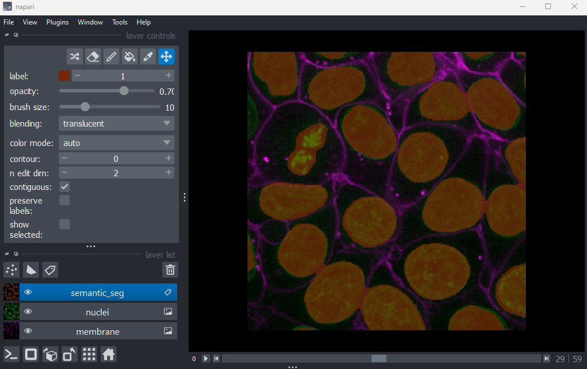
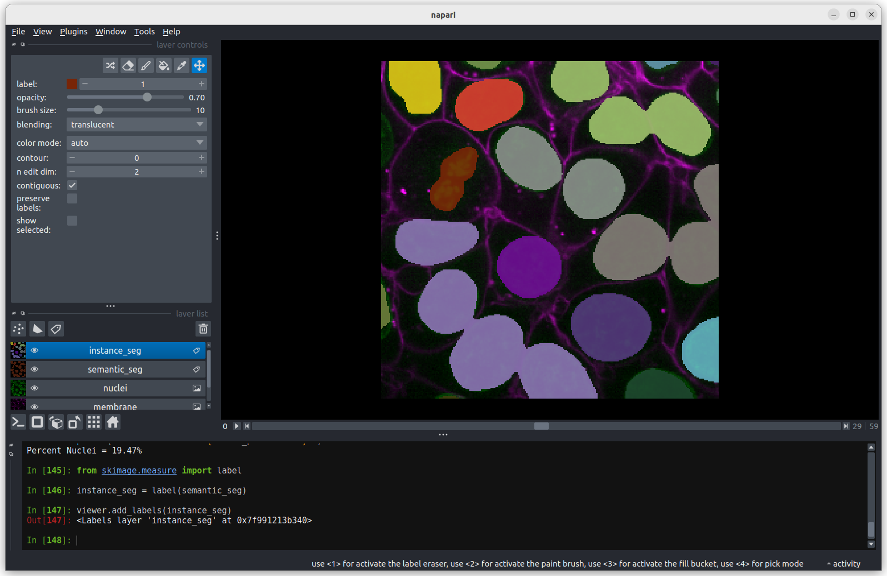
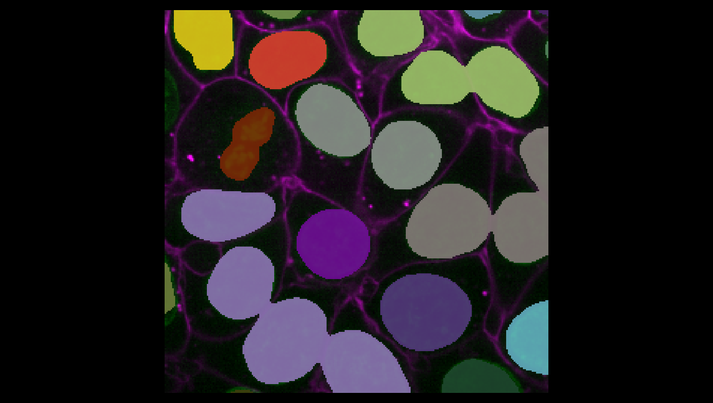
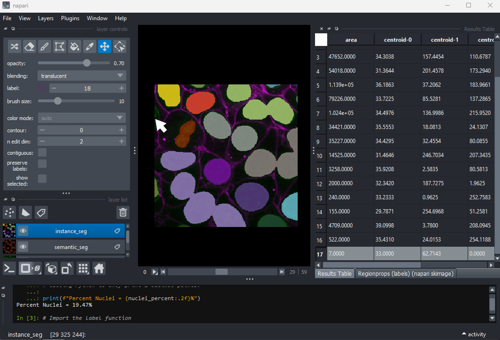
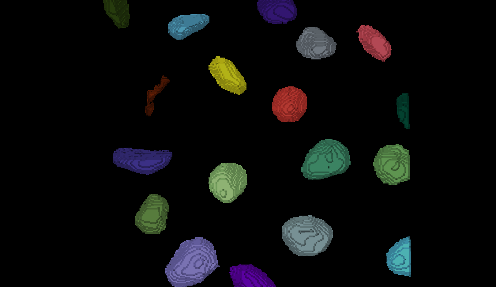
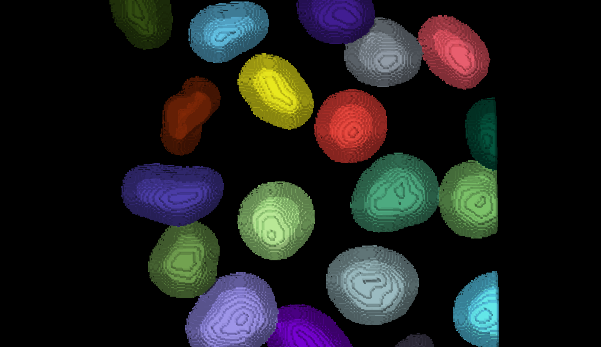

Instance segmentation and measurements
Last updated on 2026-08-23 | Edit this page
Estimated time: 80 minutes
Overview
Questions
- How do we perform instance segmentation in Napari?
- How do we measure cell size with Napari?
- How can computational notebooks be used to build reusable workflows?
Objectives
- Use simple operations (like erosion and dilation) to clean up a segmentation.
- Use connected components labelling on a thresholded image.
- Calculate the number of cells and average cell volume.
- Save and edit your workflow to reuse on subsequent images.
- Perform more complex cell shape analysis using scikit-image’s
regionprops.
In this lesson we’ll continue to work with the Cells (3D + 2Ch) image we’ve been using in past lessons.
Instead of entering Python commands in Napari’s built‑in console, we will write and run our code in a computational notebook using JupyterLab. This allows us to build a reusable workflow that is easy to repeat and adapt.
We have kept the level of programming knowledge required to the minimum possible and all code can be run by copy and pasting, so don’t worry if you don’t understand it all yet.
Most, if not all, of the functions we will use in this lesson are also accessible via various Napari plugins, so the analysis pipeline could also be assembled within Napari if you prefer.
Creating a notebook in JupyterLab
1. Activate your Napari environment
Open the terminal (the same one you used for Napari installation: see ‘Opening a terminal’ section of the setup instructions), and activate the environment you created for Napari:
3. Create and navigate to your workshop folder
It is best practice to keep all your project files together in a dedicated folder.
- Use the file browser on the left-hand side
- Navigate to a location that is easy to find again (like your Desktop)
- Right-click to create a new folder and name it napari-workshop
4. Create a new notebook
Once you are inside the napari-workshop folder, create a new notebook.
For example by using the JupyterLab menu bar to select: File > New > Notebook > Python 3 (ipykernel)
This will open a new Python notebook.
5. Name your notebook
Renaming your notebook immediately helps keep your workflow tidy and makes it easier to find later.
Right click the default name at the top of the notebook tab (e.g.,
Untitled.ipynb), and select
Rename Notebook....
Enter a meaningful name, for example: instance_segmentation.ipynb.
About notebooks
A notebook is made up of building blocks called cells.
For this workshop, we will only use Code Cells.
When you run a Code Cell, the output typically appears underneath it. This could be a number, text, a table, or an error message.
By splitting code up into cells, you can run one specific part of your code without having to re-run the whole file and get instant feedback.
Be careful about the order of your notebook cells. Running them out of sequence can leave variables outdated or missing, which can lead to confusing results.
Using Python inside a notebook
Run each of the following examples in separate notebook cells so you can clearly see the output after each step.
PYTHON
# Everything after a hash (#) is a comment and is ignored by Python.
# Use comments to explain what you're doing.If you want to create another cell, click the + button in the toolbar or use the Insert Cell Below button on the right side of the cell.
OUTPUT
3Notice that there is no output.
PYTHON
# Variables store values rather than return them
# To see their value write the variable name
twoOUTPUT
2Note: In a standard Python script, writing a
variable name on its own does nothing and you must use
print() to show output.
OUTPUT
one plus one is 2
one plus two is 3Using Napari from within a notebook
PYTHON
# Open Cells (3D + 2Ch) sample image in napari's viewer
viewer = napari.Viewer()
viewer.open_sample("napari", "cells3d")The output should look like this:
OUTPUT
[<Image layer 'membrane' at 0x1853b7738c0>,
<Image layer 'nuclei' at 0x1853c844710>]The memory addresses (0x1853b7738c0 and
0x1853c844710) will be different for you. They indicate the
locations in memory where Python happened to store those layer
objects.
Napari’s viewer should open in a separate window, preloaded with the cells3D sample image.
Semantic segmentation
First, we will re-create the semantic segmentation of our nuclei that we made in the previous episode.
We start by blurring the image and setting a threshold.
PYTHON
# Create a semantic segmentation
# Import the functions we need from scikit-image
from skimage.filters import threshold_otsu, gaussian
# Access the nuclei channel from the viewer
image = viewer.layers["nuclei"].data
# Smooth the image
blurred = gaussian(image, sigma=3)
# Compute a threshold
threshold = threshold_otsu(blurred)
print("The threshold picked is:", threshold) OUTPUT
The threshold picked is: 0.1407702761280905Using our threshold on the blurred image we create a semantic segmentation.
PYTHON
# Create a semantic segmentation
semantic_seg = blurred > threshold
# Add as a labels layer to the viewer
viewer.add_labels(semantic_seg)OUTPUT
<Labels layer 'semantic_seg' at 0x1f157459820>
In the Napari viewer you should see the image above.
Instance segmentation
We will use the the label function from scikit-image to create an instance segmentation.
The label function is an example of connected component analysis. Connected component analysis will go through the entire image, determine which parts of the segmentation are connected to each other and form separate objects. Then it will assign each connected region a unique integer value.
PYTHON
# Instance segmentation
# Import the label function
from skimage.measure import label
# Run the label function on the mask image
instance_seg = label(semantic_seg)
# Add the result to the viewer
viewer.add_labels(instance_seg)
You should see the above image in the Napari viewer. The different colours are used to represent the labels of separate objects.
Counting the nuclei
Because the instance segmentation assigns a different integer value starting at 1 and increasing in steps of 1 (1, 2, 3, …) to each object, counting the number of nuclei can be done very easily by taking the maximum value of the instance segmentation image.
PYTHON
# Count the nuclei
number_of_nuclei = instance_seg.max()
print("Number of nuclei: ", number_of_nuclei)OUTPUT
Number of nuclei: 18Using napari-skimage plugin to measure nuclei size
In the napari toolbar, open
Layers > Measure > Regionprops (labels) (skimage).
You should see a dialog like this: 
Select instance_seg in the ‘Labels layer’ drop down box
and nuclei in the ‘Intensity Image Layer’ drop down box.
You can choose to measure various shape properties with this plugin but
for now let’s keep it simple, making sure that only area,
centroid and label are selected. You will need
to hold down ctrl to select multiple items in the list.
Click Analyze - a table of numeric values should appear
in napari. If it opens in an inconvenient location, you can click and
drag on the header containing the x,  and other icons
next to the table window to reposition it.
and other icons
next to the table window to reposition it. 
Regionprops
Before, we used the napari‑skimage plugin to create a table with properties of the nuclei. The same properties can also be computed using scikit-image directly in our notebook.
PYTHON
# Create a Regionprops table
# Import tools
from skimage.measure import regionprops_table
import pandas as pd
# Compute region properties
props = regionprops_table(
label_image=instance_seg,
properties=["label", "area", "centroid"]
)
# Convert to a pandas DataFrame
props_df = pd.DataFrame(props)
# Display the table
props_dfSorting and inspecting the results
Regionprops can generate a lot of information on the shape and size
of each connected region. For now we will focus only on the column
headed area, which shows the size in pixels.
Let’s sort our table so that it is easier to see the extreme values.
PYTHON
# Sort the table based on cell size (area)
sorted_props_df = props_df.sort_values("area")
# Display the table
sorted_props_dfThe largest nucleus
According to the table, nucleus 3 is larger than the other nuclei (202258 pixels). In the what is an image lesson, we learnt to use the mouse pointer to find particular values in an image. Hovering the mouse pointer over the light purple nuclei at the bottom left of the image we see that these apparently four separate nuclei have been labelled as a single nucleus.
In the layer controls of the instance_seg layer we can confirm this
by selecting label 3 and enabling
show selected.
Why Are Separate Nuclei Getting the Same Label?

In the image above, three of the light purple nuclei are visibly
touching, so it is not surprising that they have been considered as a
single connected component and thus labelled as a single
nucleus. What about the fourth apparently separate nucleus? Why does it
have the same label?
It is important to remember that this is a three-dimensional image and so pixels will be considered as “connected” if they are adjacent to another segmented pixel in any of the three dimensions (and not just in the two-dimensional slice that you are looking at).
You may remember from our first
lesson that we can change to 3D view mode by pressing the  button. Try it now.
button. Try it now.
 You should see the image rendered in 3D, with a clear join between the
upper most light purple nucleus and its neighbour.
You should see the image rendered in 3D, with a clear join between the
upper most light purple nucleus and its neighbour.
The smallest nucleus
The smallest nucleus is labelled 18, with a size of 7 pixels. We can
use the position data (the centroid columns) in the table
to help find this nucleus. We need to navigate to slice 33 and get the
mouse near the top left corner (33 63 0) to find label 18 in the
image.

Nucleus 18 is right at the edge of the image, so is only a partial nucleus. Partial nuclei will need to be excluded from our analysis. We’ll do this later in the lesson with a clear border filter. However, first we need to solve the problem of joined nuclei.
Separating joined nuclei
Our first problem is how to deal with four apparently distinct nuclei (labelled with a light purple colour) being segmented as a single nucleus.
Erosion
To separate our nuclei, we can ‘erode’ our segmentation. Erosion is a type of filter, similar to those we covered in the filters and thresholding episode. It will make all segmented nuclei smaller, by setting pixels at their edge to zero.
The size / shape of the region that gets set to zero is controlled by the filter’s ‘footprint’. We’ll use scikit-image’s ball function to generate a sphere to use as the footprint. Any pixels closer to the edge of the nucleus than the radius of this sphere will be set to zero.
Create a new cell and run:
PYTHON
# Erode the semantic segmentation
# import tools
from skimage.morphology import erosion, ball
# Erosion with a radius 1 ball
eroded_mask = erosion(semantic_seg, footprint = ball(1))
viewer.add_labels(eroded_mask, name = "eroded_ball_1")What is a good radius?
We can change the radius of the footprint to control the amount of erosion.
Try eroding the semantic_seg layer with different
integer values for the radius. What radius do you need to ensure all
nuclei are separate?
Note that larger radius values will take longer to run on your computer.
Keep your radius values <= 15.
To test different values of radius, you can assign a different value
to radius, e.g. radius = 5 and rerun the last two lines
from above. Or you can try with a Python for
loop which enables us to test multiple values of radius quickly.
PYTHON
# Erode the mask using a ball
# Radius 5
eroded_mask = erosion(semantic_seg, footprint=ball(5))
# Add the eroded mask as a new layer in Napari
viewer.add_labels(eroded_mask, name="eroded_ball_5")
# Radius 10
eroded_mask = erosion(semantic_seg, footprint=ball(10))
# Add the eroded mask as a new layer in Napari
viewer.add_labels(eroded_mask, name="eroded_ball_10")
# Radius 15
eroded_mask = erosion(semantic_seg, footprint=ball(15))
# Add the eroded mask as a new layer in Napari
viewer.add_labels(eroded_mask, name="eroded_ball_15")

For-loop to test different radii
Try using a Python for loop to test several radius
values.
You can change the radius manually (for example,
radius = 5) and re‑run the erosion each time.
But if you want to test many radius values quickly, a
Python for
loop lets you repeat the same steps for each radius in a list.
PYTHON
# List of radii to test
radii = [5, 10, 15]
# A for-loop that tests several radii
for radius in radii:
# Make a name for the output layer
layer_name = "eroded_ball_" + str(radius)
# Erode the mask using this radius
eroded_mask = erosion(semantic_seg, footprint=ball(radius))
# Add the eroded mask as a new layer in Napari
viewer.add_labels(eroded_mask, name=layer_name)It is possible to run the erosion function through a plugin:
Layers > Filter > Morphology > Binary Morphology (napari skimage).
Instance segmentation using the eroded mask
Now we have separate nuclei, lets try creating instance labels again.
PYTHON
# Create a new instance segmentation using the eroded mask
eroded_mask = erosion(semantic_seg, footprint=ball(10))
instance_seg = label(eroded_mask)
# Remove old instance segmentation
viewer.layers.remove('instance_seg')
# Add new instance segmentation
viewer.add_labels(instance_seg)
Looking at the image above, there are no longer any incorrectly joined nuclei.
Dilation
We managed to separate the nuclei, however performing any size or shape analysis on these nuclei will be flawed, as they are heavily eroded.
We can largely undo the erosion by using scikit-image’s expand labels function.
The expand labels function is a filter which performs a
dilation, expanding the bright (non-zero) parts of the
image. The expand labels function adds an extra step to stop the
dilation when two neighbouring labels meet, preventing overlapping
labels.
PYTHON
from skimage.segmentation import expand_labels
# Dilate eroded instance segmentation with the same radius
instance_seg = expand_labels(instance_seg, 10)
# Remove old instance segmentation
viewer.layers.remove('instance_seg')
# Add new instance segmentation
viewer.add_labels(instance_seg)
There are now 19 apparently correctly labelled nuclei that appear to be the same shape as in the original mask image.Opening
In order to create a correct instance segmentation we have performed
a mask erosion followed by a label expansion. This is a common image
operation often used to remove background noise, known as as
opening, or an erosion followed by a dilation. In addition
to helping us separate instances it will have the effect of removing
objects smaller than the erosion footprint, in this case a sphere with
radius 10 pixels.
Is the erosion completely reversible?
If we compare the eroded and expanded image with the original mask, what will we see?
 Looking at the above image we can see some small mismatches around the
edges of most of the nuclei. It should be remembered when looking at
this image that it is a single slice though a 3D image, so in some cases
where the differences look large (for example the nucleus at the bottom
right) they may still be only one pixel deep. Will the effect of this on
the accuracy of our results be significant?
Looking at the above image we can see some small mismatches around the
edges of most of the nuclei. It should be remembered when looking at
this image that it is a single slice though a 3D image, so in some cases
where the differences look large (for example the nucleus at the bottom
right) they may still be only one pixel deep. Will the effect of this on
the accuracy of our results be significant?
Removing Border Cells
Now we return to the second problem with our initial instance segmentation, the presence of partial nuclei around the image borders. As we’re measuring nuclei size, the presence of any partially visible nuclei could substantially bias our statistics.
We can remove these from our analysis using scikit-image’s clear border function.
PYTHON
# Remove partial nuclei touching the image border
# Import scikit-image's clear_border
from skimage.segmentation import clear_border
# Clear border
instance_seg = clear_border(instance_seg)
# Remove old instance segmentation
viewer.layers.remove('instance_seg')
# Add new instance segmentation
viewer.add_labels(instance_seg)
We now have an image with 11 clearly labelled nuclei. You may notice that the smaller nucleus (dark orange) near the top left of the image has been removed even though we can’t see where it touches the image border. Remember that this is a 3D image and clear border removes nuclei touching any border. This nucleus has been removed because it touches the top or bottom (z axis) of the image.
Let’s check the nuclei count as we did above.
PYTHON
# First count the nuclei
number_of_nuclei = instance_seg.max()
print("Number of nuclei: ", number_of_nuclei)OUTPUT
Number of nuclei: 19Why are there 19 nuclei?
When we ran clear_borders the pixels corresponding to
border nuclei were set to zero, however the total number of labels in
the image was not changed, so whilst there are 19 labels in the image
some of them have no corresponding pixels. The easiest way to correct
this is to relabel the image (and replace the old instance segmentation
in the viewer.)
PYTHON
# Relabel
instance_seg = label(instance_seg)
# Remove old instance segmentation
viewer.layers.remove('instance_seg')
# Add relabeled instance segmentation
viewer.add_labels(instance_seg)
# Number of nuclei after relabling
number_of_nuclei = instance_seg.max()
print("Number of nuclei:", number_of_nuclei)OUTPUT
Number of nuclei: 11Number of pixels per nucleus
Now that your instance segmentation is correct, you can finish the analysis in our notebook.
Let’s start by counting the pixels per nucleus like we did before.
PYTHON
# Count the pixels per nucleus
# Extract region properties
props = regionprops_table(
instance_seg,
properties=["label", "area"] # 'area' = number of pixels
)
# Convert to a pandas DataFrame
props_df = pd.DataFrame(props)
props_dfAre these pixel counts useful measurements? Pixel counts depend on image resolution, rather than the real size of a biological structure. This means images of the exact same nuclei taken with different settings could give vastly different values for the number of pixels.
This is why biologists convert pixel counts into physical units like µm³ that allow comparisons across experiments, microscopes, and labs.
Volume per nuclei
To convert to volumes we need to know the pixel size.
In the lesson on filetypes and metadata we learnt how to inspect the image metadata to determine the pixel size.
Unfortunately the sample image we’re using in this lesson has no metadata. Fortunately the image pixel sizes can be found in the scikit-image documentation. So we can assign a pixel size of 0.26μm (x axis), 0.26μm (y axis) and 0.29μm (z axis).
Using this pixel size, we can then calculate the nucleus volume in cubic micrometres.
PYTHON
# Volume of a single voxel in cubic micrometres
voxel_volume = 0.26 * 0.26 * 0.29
# Add a physical volume column
props_df["volume_um3"] = props_df["area"] * voxel_volume
props_dfOnce you know the voxel size, pandas makes the
conversion and analysis extremely easy:
Saving, reusing, and sharing your workflow
A key advantage of using a JupyterLab notebook is that your entire analysis is saved in one place. This makes your workflow reproducible, easy to adapt, and simple to share with others.
A tidy notebook is easier to understand for others (and for your future self).
Good practice includes:
Ensuring the notebook runs without issues from beginning to end.
Organising the notebook into clear sections (e.g. imports, loading data, segmentation, measurements, exporting results).
Removing unused cells and tidying temporary experiments.
Adding short notes explaining key steps and decisions.
Your notebook contains all the analysis steps, but it won’t run correctly unless the software environment is the same. You can share the instructions you used to create your conda environment, but this doesn’t always reproduce the exact same package versions or dependencies. Conda also provides tools for exporting an environment so it can be recreated more reliably elsewhere. See the conda documentation for more information.
Other good practices include:
Sharing your notebook on a collaborative platform such as GitHub or GitLab, where others can comment, discuss, or propose improvements.
Using version control (e.g., Git) to track changes, document improvements, and maintain a clear history of how your workflow evolves. This also gives you the ability to revert to earlier versions whenever a mistake happens, ensuring you never lose work in progress.
- Connected component analysis (the label function) was used to assign each connected region of a mask a unique integer value. This produces an instance segmentation from a semantic segmentation.
- Erosion and dilation filters were used to correct the instance segmentation. Erosion was used to separate individual nuclei. Dilation (or expansion) was used to return the nuclei to their (approximate) original size.
- Partial nuclei at the image edges can be removed with the clear_border function.
- The napari-skimage plugin can be used to interactively examine the nuclei shapes.
- JupyterLab notebooks allow you to create reproducible workflows.